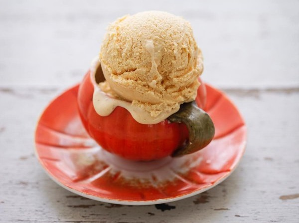

NO-CHURN BRANDIED PUMPKIN ICE CREAM
INGREDIENTS :
- ½ cup pumpkin puree (from a can)
- ⅔ cup sweetened condensed milk
- 1¼ cups heavy cream
- 1 teaspoon freshly grated nutmeg
- 3 tablespoons brandy
METHOD :
- Combine the pumpkin purée and sweetened condensed milk in a bowl, and stir to mix.
- Add the cream and whisk until it begins to thicken. (If using American heavy-cream or whipping cream in other countries, whisk your cream in a bowl first, until it reaches soft peaks, then whisk in the sweetened condensed milk mixture and continue whisking until thick again.).
- Grate the nutmeg over the ice cream and whisk in the brandy as you pour it in a slow trickle.
- Decant into your airtight container or containers and freeze overnight. Take it out of the freezer for 10 minutes to soften before serving.
- MAKE AHEAD NOTE: The ice cream can be made and frozen up to 1 week ahead.
- STORE NOTE: Leftover ice cream should be returned to freezer as quickly as possible, and is best eaten within 1 month